ProfitSync · engineering report · branch feat/debt-loans (stacked on feat/credit-card-accounts, PR #365) · 4 September 2026
Debts and loans are now first-class in the ledger. A debt is a liability account; money someone owes the user is a receivable account. Borrowing is a transfer into a bank or cash account, never income. Repaying principal is a transfer back, never an expense. Only interest, fees and other charges are expenses. Everything the hub shows — status, progress, this month's obligations, next payment, debt-free date, payoff plans — is derived from the ledger plus the terms the user entered. No parallel bookkeeping was added.
wealth_accounts.current_balance already holds the signed asset-equivalent value for every account type; credit cards (PR #365) are negative when owed. The ledger (balanceDelta, transfers, trash/restore reversals, system rows) needed no change to host a loan.wealth_accounts row with type = 'loan' (I owe, balance negative) or 'receivable' (owed to me, balance positive). Its TERMS live in a 1:1 debt_details row. Every movement is an ordinary ledger row, so transfers, trash, restore, purge, cascades, budgets and net worth work unchanged. The sign is read only through isLiabilityType / src/lib/debt-status.ts, never in a component.| Event | Ledger rows | Debt | Bank | Expense | Income | Net worth |
|---|---|---|---|---|---|---|
| Borrow €5,000 into cash | transfer loan → cash (or a system Opening Balance when the money is already spent) | −5,000 | +5,000 | 0 | 0 | 0 |
| Pay €500: 420 principal, 70 interest, 10 fees | ONE group: transfer bank → loan €420 + two outgoing expenses on the bank | +420 | −500 | +80 | 0 | −80 |
| Lend €400 to Luca | transfer cash → receivable | +400 (asset) | −400 | 0 | 0 | 0 |
| Luca repays €100 + €5 interest | transfer receivable → cash €100 + incoming €5 on cash | −100 | +105 | 0 | +5 | +5 |
| Reconcile balance to a statement | system Balance Adjustment on the debt | Δ | — | 0 | 0 | Δ |
debt_details stores only what the user knows: kind, counterparty, native currency, original amount, rate and rate type, scheduled payment and frequency, next due date, start/maturity, remaining instalments, an estimate flag, the lifecycle (active | paused | paid_off | refinanced | written_off), the refinanced-into account and notes. Status, progress, this month's required/paid/remaining, overdue, next payment, remaining interest, the debt-free date and the insights are all computed in src/lib/debt-status.ts from the balance and the payment history. Nothing that can be derived is stored.
A recorded repayment is one ledger group: the principal transfer plus zero or more expense legs for interest, fees and other charges on the paying account. debt_payments records the allocation (principal / interest / fees / other, split_source ∈ calculated | principal_only | typed) anchored on the group's first leg with a cascading FK, so trashing the group hides the allocation and restoring brings it back once. When the user knows only the total, the split is calculated from one period of interest at the entered rate; with no rate the whole amount is principal and marked as such. Recording a payment also advances next_due_date and remaining_installments.
src/lib/debt-math.ts: periodic rate per frequency, one-period interest, annuity payment, amortization with a final-payment tolerance (min(payment, max(€1, 2 %))) so schedules converge without a phantom extra period, and a non-convergence flag when the payment does not cover interest. src/lib/debt-planner.ts: month-by-month simulation of minimum only (no pool, no rollover), avalanche (highest rate first), snowball (smallest balance first), free-up-cash (highest payment-to-balance first) and custom order, with a cleared debt's payment rolling into the next target, what-if extra per month and a one-off lump sum, side-by-side comparison, an affordability check that switches to a stabilisation message when scheduled payments exceed the budget, and a debt-payment-to-income ratio. Debts without a rate are simulated at 0 % and labelled as such.
Migration 0063 (hand-written like 0060–0062; drizzle-kit generate is out of sync), purely additive:
wealth_accounts.type accepts loan and receivable (existing rows untouched).debt_details: one row per debt account (unique wealth_account_id, cascades), CHECK constraints on kind, rate type, frequency, lifecycle and split source, non-negative amounts.debt_payments: transaction_id FK cascade, group_id, date, total, principal, interest, fees, other, split_source, note; read only while the anchor transaction is not trashed.Deleting a debt: an account with history is archived (closed) so its ledger stays consistent; an account with no non-system rows is hard-deleted and its rows cascade. Account deletion / factory reset already cascade wealth_accounts, so the new tables follow.
| Route | Purpose |
|---|---|
GET /api/debts | Hub payload: debts (owed and receivable), summary (per-currency totals, this month required / paid / remaining / overdue, next payment, interest this month, total repaid, debt-free date, average monthly income, insights) and the next three months of scheduled payments. |
POST /api/debts | Create (Quick or Detailed). direction = owed / receivable; opening either as a system Opening Balance or as a transfer with disbursement_account_id. |
GET / PATCH / DELETE /api/debts/:id | Detail + payment history + projected schedule · edit terms, lifecycle, refinanced-into, reconcile the balance (system Balance Adjustment) · archive-or-delete. |
GET / POST /api/debts/:id/payments | List · record a repayment (one ledger group, quota-checked, categories for interest / fees resolved from the org's list). |
DELETE /api/debts/:id/payments/:paymentId | Move the whole payment group to Trash (restore via the existing Trash flow). |
Guard-rails: GET /api/wealth/accounts hides space, loan and receivable; the plain transaction endpoints reject debt accounts; every route is org-scoped through requireAuth and role-checked with canWrite / canDelete. Registered in api/index.ts after the card route (static before dynamic).
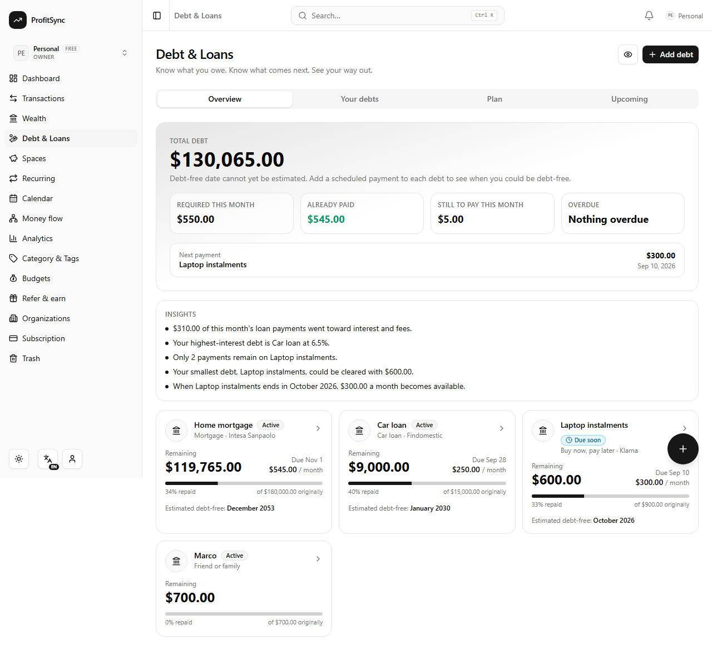
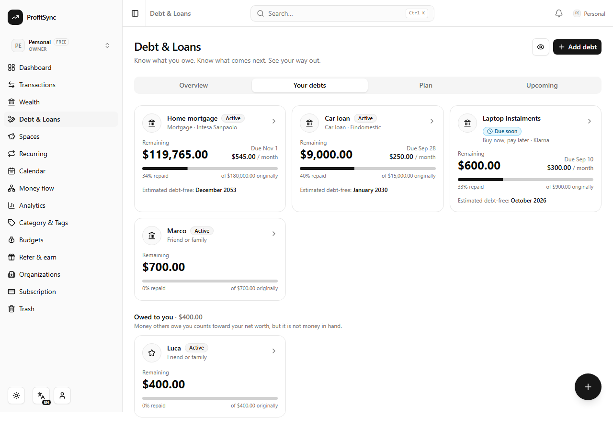
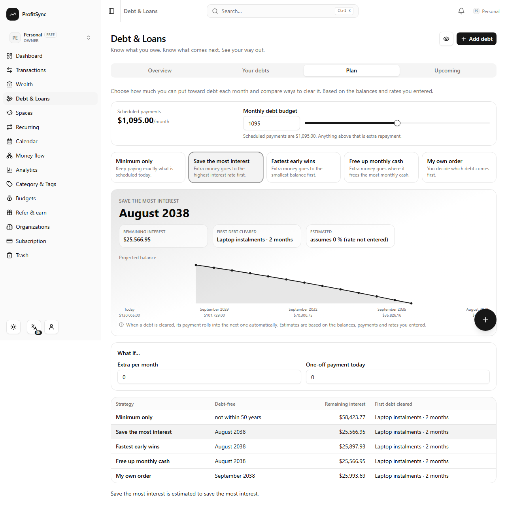
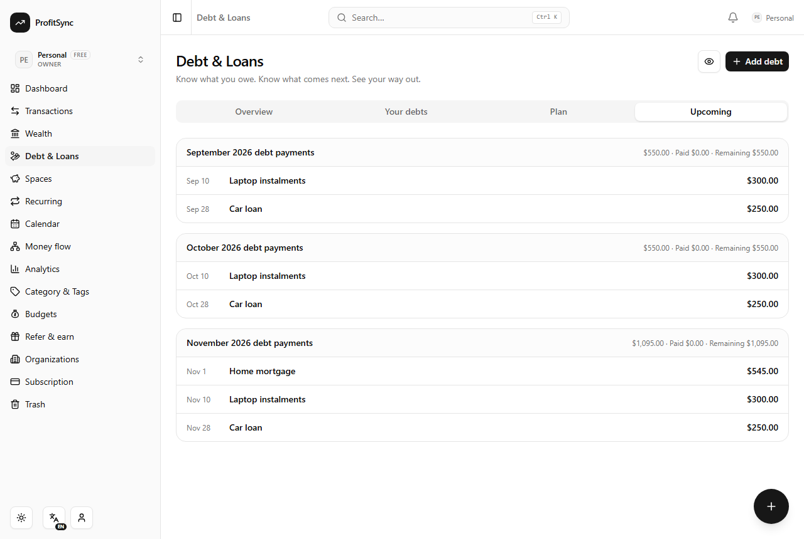
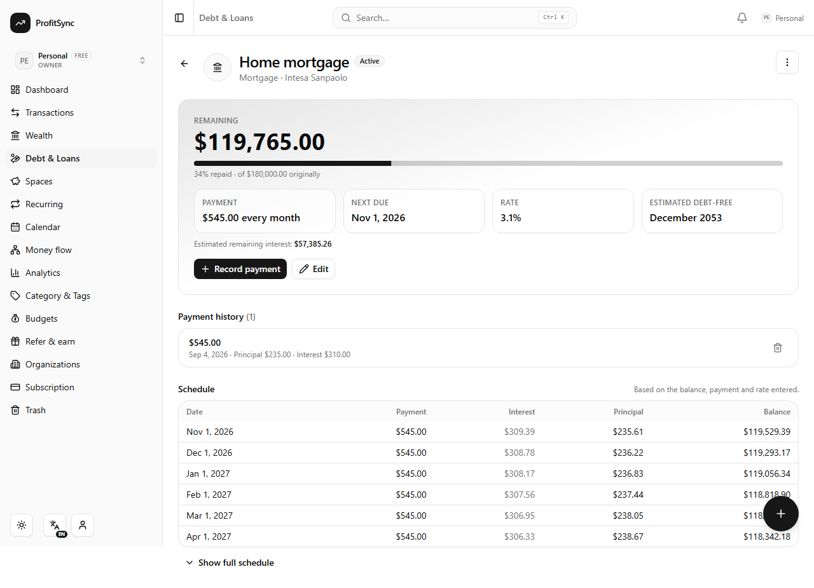
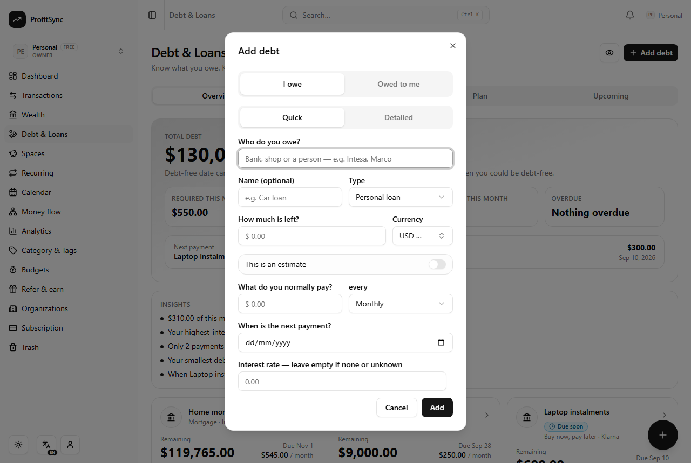
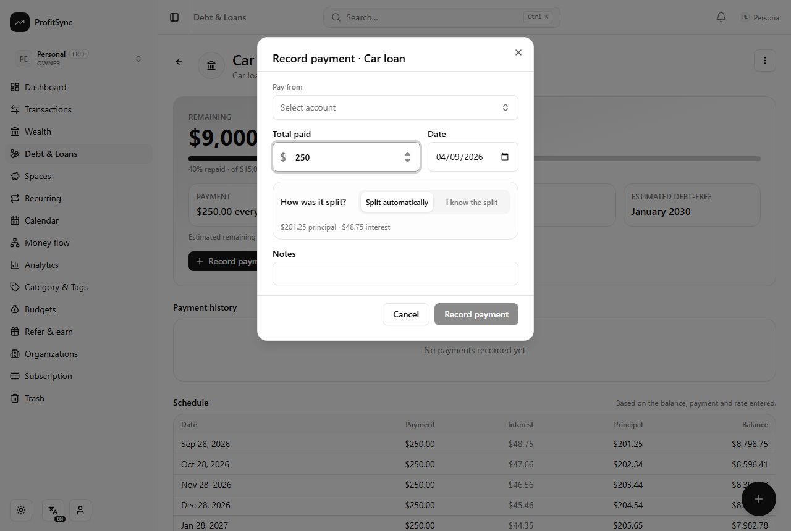
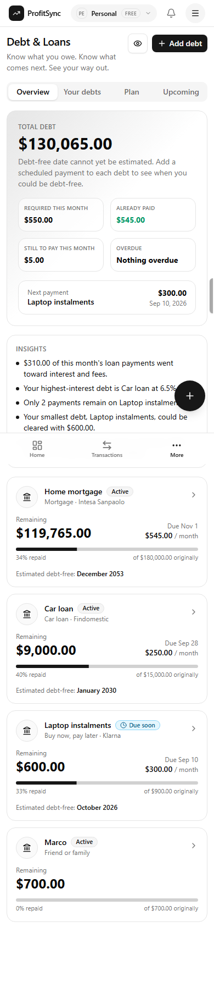
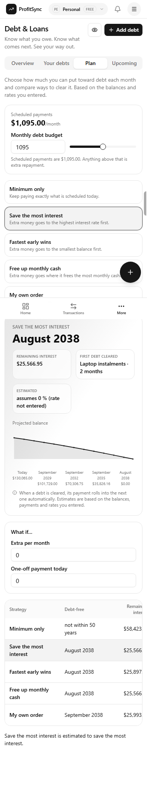
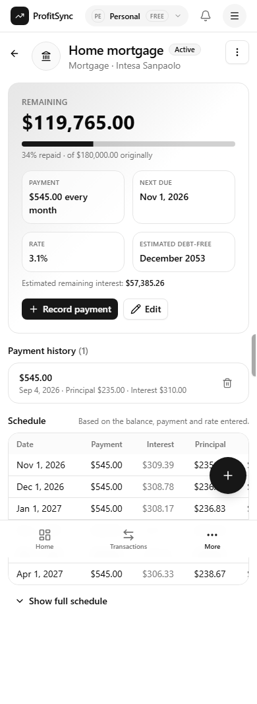
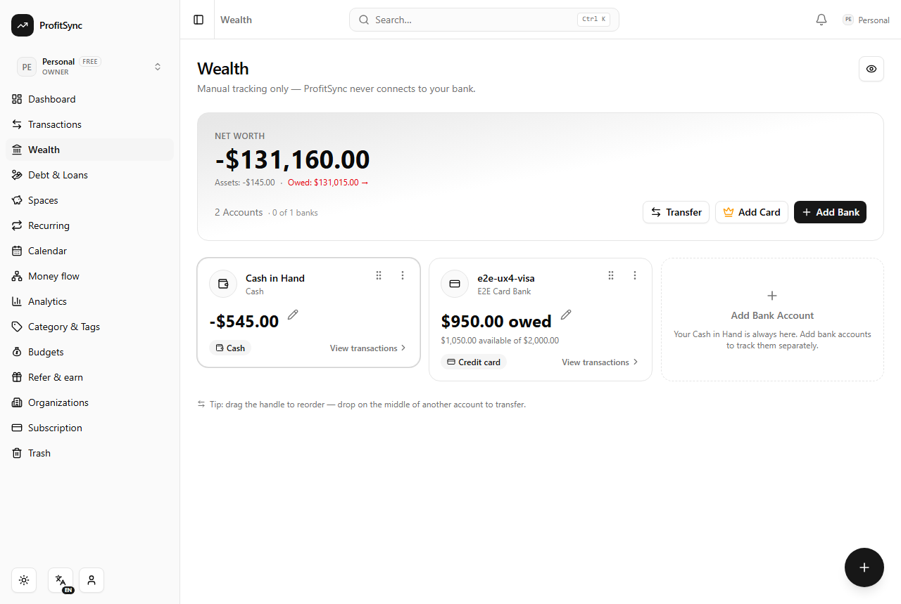
summarizeWealth): liquid + receivables − liabilities (cards and loans); receivables are assets but never liquid. Same-currency only — no FX is invented.tx-sql rules.debts i18n namespace registered; English base strings with English placeholders in the seven other locales (repo convention, i18n:check green).cap:sync:android and build:ios + cap copy ios run after the final gate.| Suite | What it proves | Result |
|---|---|---|
debt-math.test.ts | Periodic rates, annuity payment, amortization convergence and final-payment tolerance, split calculation, date stepping across month ends. | pass |
debt-planner.test.ts | Strategy ordering, rollover, minimum-only never rolls over, lump sum and extra effects, stabilisation when under-budgeted, zero-rate assumption flag. | pass |
debt-status.test.ts | Derived statuses (overdue, due soon, paid off, lifecycle overrides), month obligations, upcoming window, debt-free estimate and its "unknown" reasons, per-currency totals, insights. | pass |
debt-ledger.test.ts | Borrowing is not income; split payment moves bank −500 / loan +420 / expense 80; informal principal-only; delete + restore once; card + loan no double count; receivable flows; multi-currency stays separate. | pass |
e2e/debts.spec.ts (local Postgres, Playwright) | Empty state → quick informal debt · borrowing into cash (cash +5,000, debt 5,000, income 0) · schedule + debt-free date · known split (bank −500, principal −420, interest 70 + fees 10 the only expenses) · auto split by rate · delete a payment reverses everything, Trash restore brings it back once · hub tabs · owed-to-me lend/repay with no income or expense · net worth on /wealth · paid off + close with the cash account exactly where the payments left it. | 11 / 11 |
e2e/credit-card.spec.ts · e2e/smoke.spec.ts | Regression after the debts changes. | 10 / 10 · 9 / 9 |
| Full unit suite | 68 files | 793 / 793 |
Gate: secret scan · check-esm-extensions (235 files) · boot-functions (every function boots under Node ESM) · check-route-guards (126 handlers) · i18n:check · lint · typecheck · vitest run · npm run build + chunk-cycle grep (empty) — all green. Migration 0063 applied to the local Docker database only; the shared Neon database was never touched.
The credit-card e2e spec called the API without x-org-id and relied on the server's profile fallback; that fallback is served from a 60-second per-user cache, so right after a workspace switch it could still name the previous workspace and cleanup ran against the wrong org. Both specs now pin the workspace id returned by the switch. The "Owed on cards" assertion was updated to the new "Owed" line.
refinanced_into_account_id) · calendar and planned-transaction integration · variable-rate modelling (rates are simulated as fixed) · FX for multi-currency totals (per-currency figures only) · milestones beyond progress % · AI quick add cannot split interest on a loan payment · human translations for the new debts keys.x-org-id after a switch (pre-existing).Recommendation: internal-test ready. The accounting core and planner are tested unit-level and end to end on a real database. Before production: real translations, a read-through of the planner copy by a finance-literate reviewer, and a staging run of migration 0063.